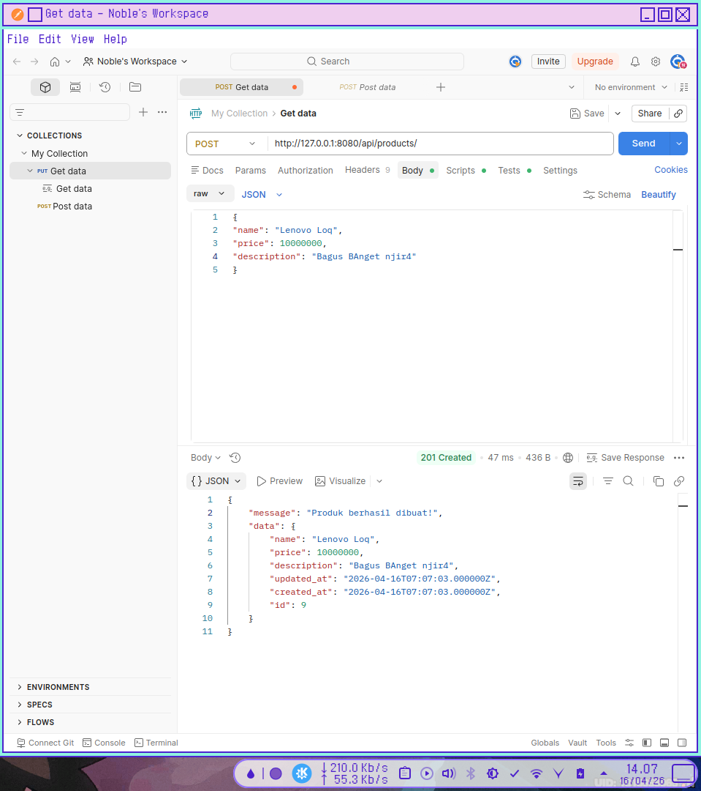
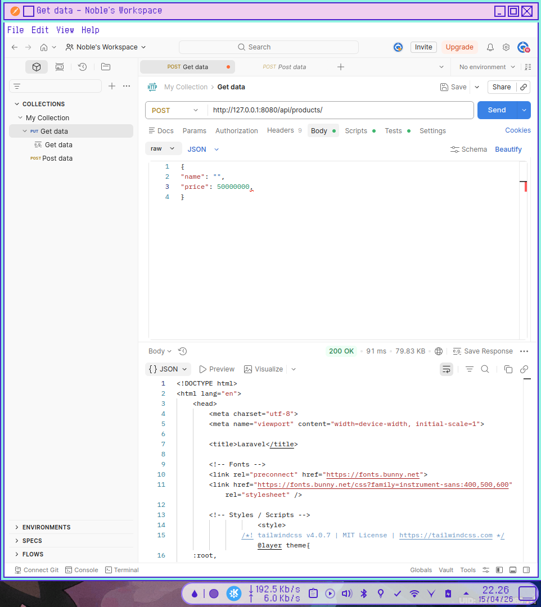
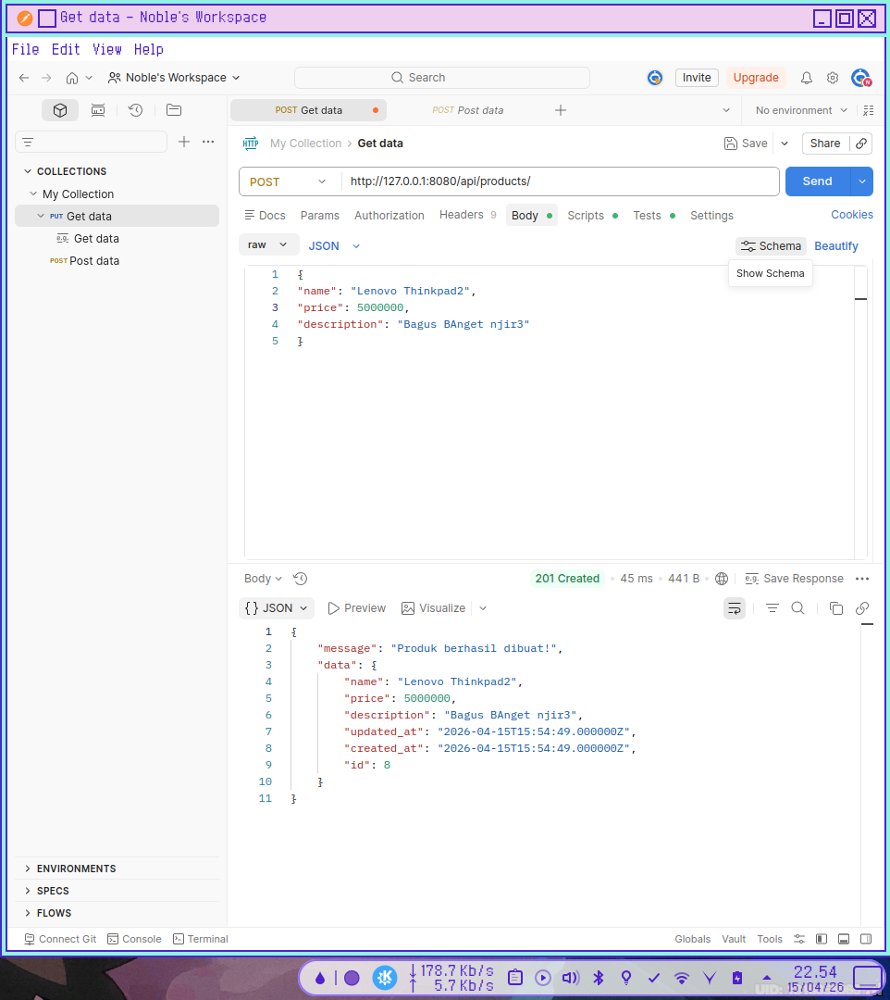
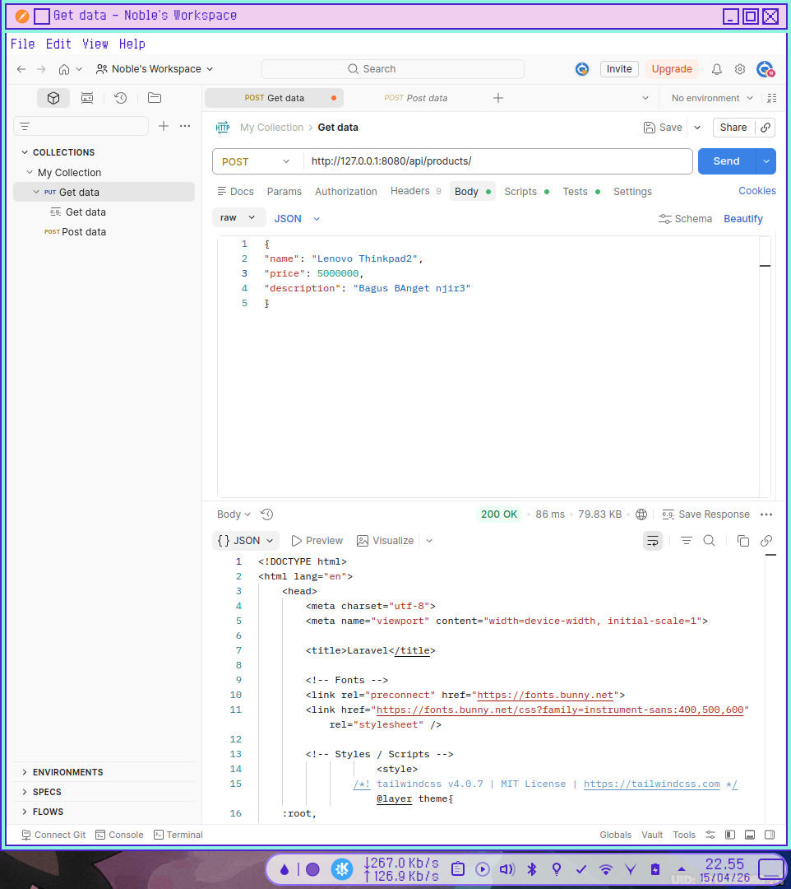

MODUL PRAKTIKUM PERTEMUAN 4
Implementasi Validation dan Error Handling pada REST API
Langkah Kerja Praktikum
1.Menambahkan Validation pada Method Store
Dari
app/Http/Requests/StoreProductRequest.phpImplementasi berbeda dengan praktikum sebagai tes memisahkan logic dari kode utama.
public function rules(): array
{
return [
'name' => 'required|string|min:3|max:255|',
'price' => 'required|numeric|min:1000|max:100000000',
'description' => 'nullable|string|max:255',
];
}
2.Menambahkan Validation pada Method Update
Dari
app/Http/Requests/UpdateProductRequest.phpdi sini saya membuat class baru dengan mengextend function dari class StoreProductRequest.
class UpdateProductRequest extends StoreProductRequest
{
public function rules(): array
{
$rules = parent::rules();
$rules['name'] = 'sometimes|string|min:3|max:255|';
$rules['price'] = 'sometimes|numeric|min:1000|max:100000000';
return $rules;
}
}
3.Menguji Validation POST Menggunakan Postman
- Data yang benar
Buka aplikasi Postman. Pilih method POST
http://127.0.0.1:8080/api/products

- Data yang Salah

pengujian gagal dengan data berikut
{
"name": "",
"price": 50000000,
}
Latihan
Kerjakan tugas berikut.
1. Tambahkan aturan validasi berikut pada field name
'name' => 'required|unique:products,name'
Contoh lengkap:
public function rules(): array
{
return [
'name' => 'required|string|min:3|max:255|unique:products,name',
'price' => 'required|numeric|min:1000|max:100000000',
'description' => 'nullable|string|max:255',
];
}
hal ini juga berlaku untuk update
2. Coba tambahkan produk dengan nama yang sama dua kali.


3. Amati respon error yang diberikan oleh server
Server Menolak POST dengan nama yang sama dengan memberi status 200 OK yang berarti gagal setelah validasi
Diskusi
1. Mengapa Validasi Harus Dilakukan pada Sisi Server?
Validasi sisi server adalah garis pertahanan terakhir dan paling krusial bagi aplikasi. Alasan utamanya adalah:
- Keamanan: Pengguna dapat dengan mudah melewati validasi sisi klien (seperti mematikan JavaScript di browser atau menggunakan alat seperti Postman/cURL untuk mengirim permintaan langsung ke API). Tanpa validasi server, sistem rentan terhadap serangan seperti SQL Injection atau Cross-Site Scripting (XSS).
- Integritas Data: Server bertanggung jawab memastikan bahwa data yang masuk ke basis data benar-benar sesuai dengan format dan aturan bisnis yang ditetapkan.
- Konsistensi: Jika aplikasi memiliki beberapa antarmuka (misalnya aplikasi Android dan Website), validasi di server memastikan aturan yang sama diterapkan untuk semua sumber input tersebut.
2. Perbedaan Validasi pada Client dan Server
Secara sederhana, validasi klien berfokus pada pengalaman pengguna (UX), sedangkan validasi server berfokus pada keamanan dan kebenaran data.
| Fitur | Validasi Client (Sisi Klien) | Validasi Server (Sisi Server) |
|---|---|---|
| Lokasi | Berjalan di browser atau perangkat pengguna (HTML5, JavaScript). | Berjalan di server backend (PHP, Python, Node.js, dll). |
| Kecepatan | Sangat cepat (instan) karena tidak perlu mengirim data ke internet. | Lebih lambat karena membutuhkan perjalanan data (round-trip) ke server. |
| Tujuan Utama | Memberikan umpan balik cepat kepada pengguna agar formulir mudah diisi. | Melindungi sistem dan memastikan data yang masuk "bersih". |
| Keandalan | Rendah (dapat dimanipulasi atau dimatikan oleh pengguna). | Tinggi (tidak dapat diintervensi oleh pengguna luar). |
3. Mengapa Sistem Harus Menolak Data yang Tidak Valid?
Menolak data yang tidak valid bukan sekadar masalah teknis, tetapi juga masalah operasional:
- Mencegah Kerusakan Data (Data Corruption): Jika data sampah atau format yang salah masuk ke basis data, hal ini dapat menyebabkan error pada fungsi aplikasi lainnya (seperti saat melakukan kalkulasi atau laporan).
- Efisiensi Sumber Daya: Memproses data yang salah hanya akan membuang-buang siklus CPU dan ruang penyimpanan. Lebih baik menghentikan proses sejak awal.
- Kejelasan bagi Pengguna: Dengan menolak data dan memberikan pesan kesalahan yang tepat, pengguna tahu bagian mana yang harus diperbaiki.
- Kepatuhan Aturan Bisnis: Misalnya, jika sebuah sistem mengharuskan usia minimal 18 tahun, menerima data di bawah itu akan melanggar logika bisnis yang telah ditentukan.